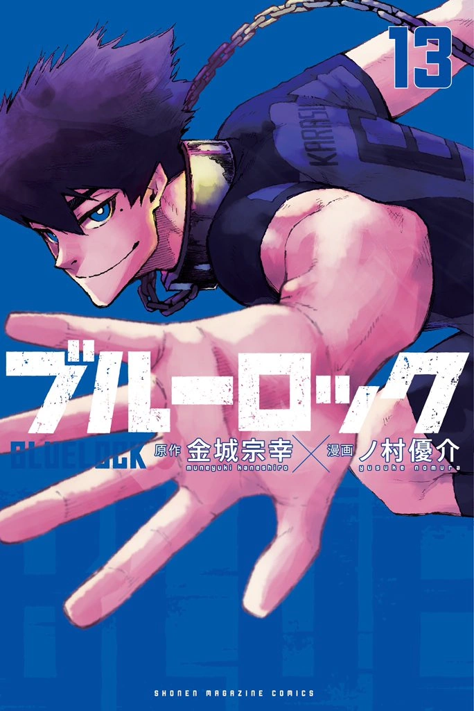
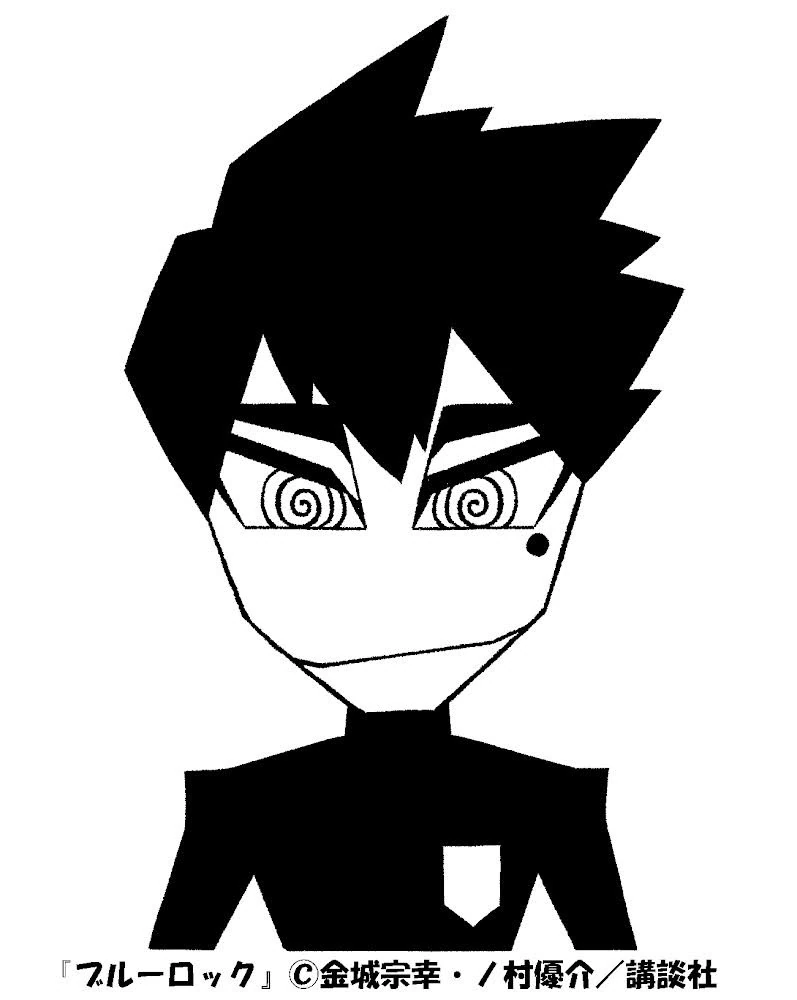
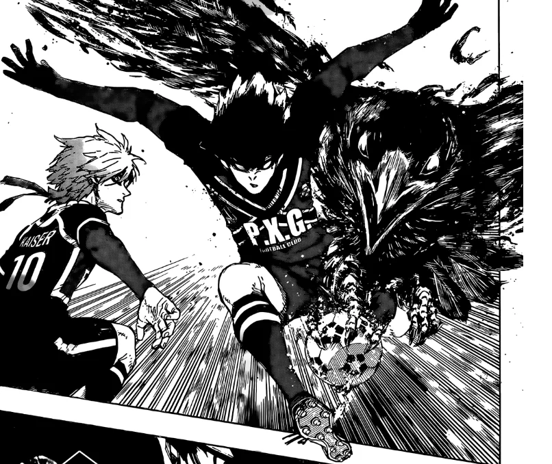
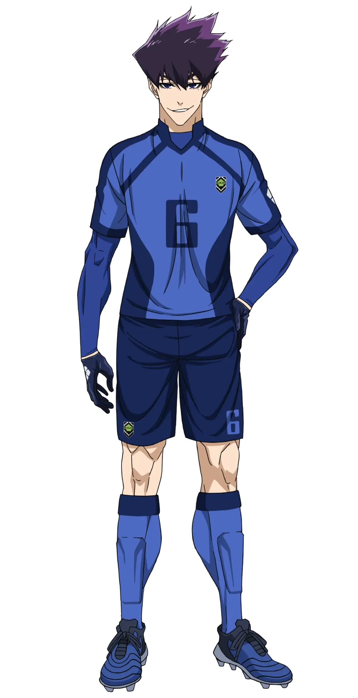

Japanese: 烏 旅人
Rōmaji: Karasu Tabito
Age: 18
Birthday: August 15
Height: 183cm / 6"
Hair color: Dark purple
Eye color: Blue
Team: Paris X Gen (France)
Jersey Numbers: 6 (Blue lock XI) / 27 (Bastard München)
Position(s): Central defensive MIdfielder
Karasu is a tall and lean young man with spiky dark purple hair and a mole under his left eye. He also has blue eyes.
Karasu tends to look down on people he finds "mediocre." He is wary of his surroundings and is able to control and produce chemical reactions with those around him. He is intelligent but has a sharp tongue and never misses a chance to insult someone, whether friend or foe. He has his own rules that he forces upon others to make matches go as planned. He dislikes it when anything goes wrong, even if it doesn't make a big difference, so it looks to others like he is always complaining.
During the U-20 match, Karasu showed his leadership ability on defense, often communicating with the other defensive players to strategize against the quickly incoming U-20 players. He commands players like Yo Hiori and Kenyu Yukimiya in terms of attacking and defending, even if the players are aware of what to do. He is also willing to use every advantage at his disposal, as shown when he asked the referee to card Ryusei Shido for happening to kick Rin Itoshi in the face.
Under his confident demeanor, Karasu considers himself to be mediocre. His trait for finding others' weaknesses and teasing them into submission was a form of protection to keep others from realizing his own true nature. He is fully aware of his mediocrity, and he respected those who he considers "extraordinary." This personality trait is what made him so compatible with Eita Otoya. Ironically enough, this extreme awareness of his own weaknesses and others is precisely what makes him "extraordinary" as well, in his own special way.